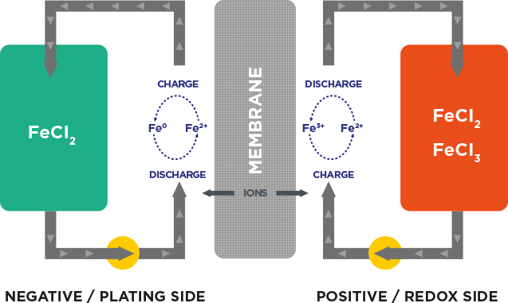
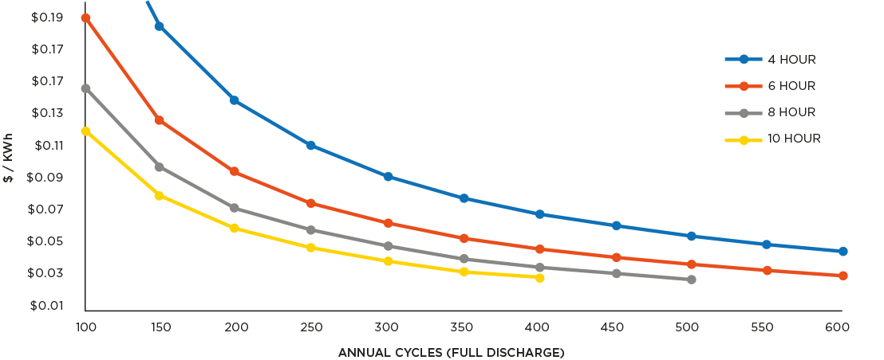
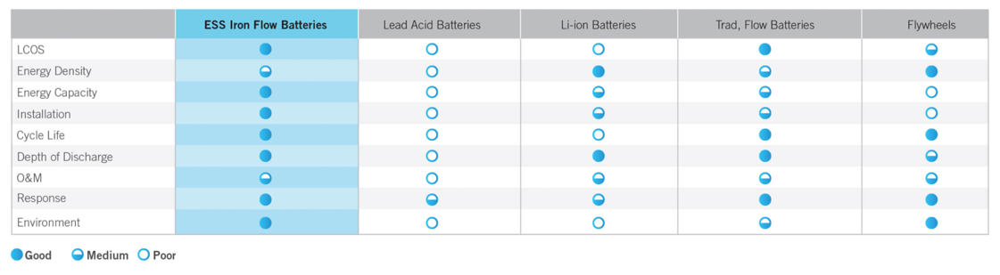

COMPLETELY SCALABLE, LONG DURATION STORAGE
Sustainable, scalable and easily transportable energy storage is here. Using food-grade, earth-abundant elements like iron, salt, and water for the electrolyte, our innovative iron flow battery system is changing how the industry deploys energy storage. Now, companies can choose a long-duration battery solution that is not only a viable alternative to lithium-ion batteries - but also comes at a lower cost. Healthy bottom line, healthy environment. That's what ESS is all about.
CLEAN, SAFE, AND SUSTAINABLE TECHNOLOGY
Our simple all-iron chemistry is comprised of earth-abundant iron, salt, and water. The system's environmentally benign characteristics, containing no hazardous chemicals or rare-earth metal, make it the greenest, most sustainable, and easiest-to-permit storage technology in the world. The iron flow battery has no fire, chemical, or explosive risk, eliminating the need for fire-suppression, secondary containment, and hazmat requirements. In addition the system is fully recyclable at end-of-life. Welcome to the future of energy storage.
HOW IT WORKS: A SIMPLE TRANSFER OF ELECTRONS CHANGED EVERYTHING
Redox, a contraction of reduction (a gain of electrons) and oxidation (a loss of electrons), is a reaction in which electrons are transferred between chemical species. Using the same electrolyte on both the negative and positive sides eliminates cross-contamination. Unlike typical batteries packaged as fixed cells or modules, a flow battery offers significantly more storage capacity than shorter-duration solutions, so users have the flexibility to shift both their energy flow and rate of storage as needed for more efficient energy management.
The Energy Center™ solution offers operational flexibility and upgradability by adding electrolyte to increase energy capacity and discharge duration, maximizing project flexibility and delivering the lowest operational cost to owners.
ZERO DEGRADATION AND UNLIMITED CYCLING: THE FUTURE OF ENERGY STORAGE
We can keep our iron chemistry stable for an unlimited number of deep-cycle charge and discharge cycles with zero degradation. Our patented electrode design and control system, coupled with our simple, yet elegant electrochemistry allows you to operate longer, and at higher efficiency levels.
UNPARALLELED FLEXIBILITY
With low cost iron and salt water chemistry, long-duration energy capacity is available at a very low $/kWh. For utilities and investors in projects expected to last 25+ years into a future with increased renewable energy penetration and evolving market needs, investing in a technology with flexibility and sustained energy capacity without augmentation costs is critical. With applications that can use 6+ hours of discharge and frequent cycling, the iron flow battery Energy Center™ delivers the lowest cost per kWh over its 25 year lifetime.
4 - 10 HOUR, 25MW ENERGY CENTRE
CAPITAL COST / CYCLE CAPACITY | 25 YEAR PROJECT LIFE
 No other technology can match the advantages of ESI Asia Pacific Pty Ltd.'s Energy Center™ (EC). The EC™ leads competitive technologies in levelised cost of storage (LCOS) and deep charge and discharge cycles. With assets including our environmentally friendly electrolyte, 20-plus year system life, turnkey installation with no hazmat compliance plan required, and fast electrical response time, users see an improvement in their LCOS and a myriad of other benefits over traditional lithium-ion batteries. Why use lithium-ion batteries in long-duration storage applications, when our technology can do the job, and do it at a lower cost with less environmental impact?